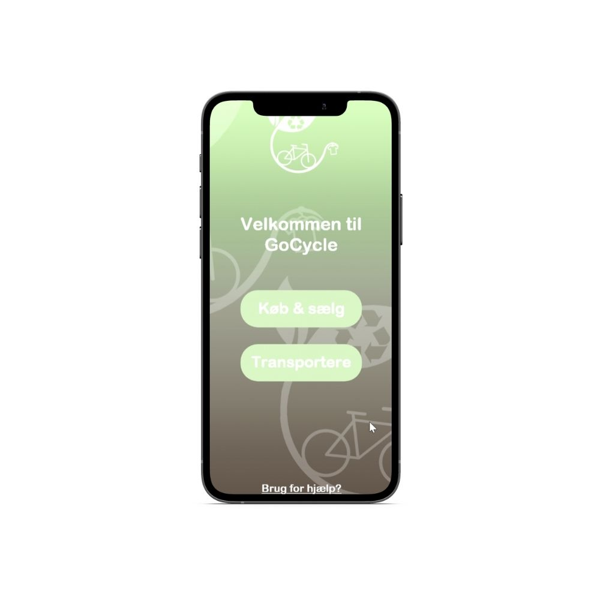

Gocycle - Startup mission
- Idéudvikling
I dette projekt, deltog vi i en iværksætterkonkurrence, hvor vi fik til opgave at udvikle en idé og en tilhørende digital prototype, som vi efterfølgende skulle pitche til et hold dommer, så vi kunne få sparring og feedback på vores idé. Vi valgte at designe en prototype til en app inden for kategorien Greentech som indebærer genbrug og grønne løsninger, med fokus på muligheder inden for bæredygtig livsstil og forretninger. Appen GoCycle fungerer som en platform hvor man kan sælge og købe secondhandvarer og en grønnere og mere bæredygtig leveringsmulighed i form af privatpersoner der fragter varen fra a til b. Min rolle i dette projekt, var at indsamle data til målgruppeanalyse og udarbejdelse af personer. Desuden var jeg designansvarlig i dette projek
